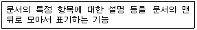
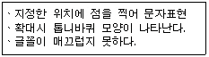
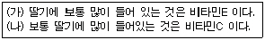
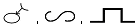
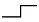
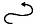
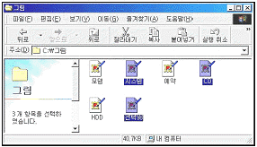
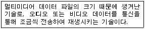

워드프로세서-2급(폐지) (2004-11-14 기출문제)
1과목: 워드프로세서 용어 및 기능
1. 다음 중 아래 설명에 알맞은 용어는?

- 각주
- 미주
- 머리말
- 꼬리말
(정답률: 80%)

2. 다음 중 문서의 저장기능과 가장 거리가 먼 것은?
- 문서 스타일 지정하기
- 파일 이름 지정하기
- 문서 암호 넣기
- 저장 폴더 변경
(정답률: 79%)
3. 다음 중 눈금자를 통해 알 수 있는 정보가 아닌 것은?(문제 오류로 실제 시험장에서는 1,2번이 정답 처리된 문제 입니다. 여기서는 1번을 정답 처리 합니다.)
- 왼쪽/오른쪽 정렬
- 입력 상태
- 탭 설정
- 들여쓰기
(정답률: 55%)
4. 다음 중 KS X 10⑤-1(유니코드)에 대한 설명으로 옳은 것은?
- 한글 2,350자를 표현할 수 있다.
- 한글과 한자는 2바이트, 영문과 공백은 1바이트로 처리한다.
- KS X 1001 완성형 코드에 비해 기억 공간을 적게 차지한다.
- 국제 표준 코드로 사용된다.
(정답률: 73%)
5. 다음 중 동일 문서내에서나 다른 문서간에 관련된 내용을 유기적으로 연결하여 바로 참조할 수 있도록 만들어진 문서의 형식은?
- 메일 머지(Mail Merge)
- 하이퍼텍스트(Hypertext)
- 상용구(Glossary)
- 매크로(Macro)
(정답률: 86%)
6. 다음 중 화면표시 형식에서 그래픽(Graphic) 모드에 대한 설명으로 옳은 것은?
- 텍스트 모드에 비해 인쇄속도가 빠르다.
- 텍스트 모드에 비해 기억공간을 많이 차지한다.
- 인쇄 전에는 출력 결과를 예측하기 어렵다.
- 텍스트 모드에 비해 처리속도가 빠르다.
(정답률: 66%)
7. 다음의 설명이 잘못된 것은?
- 스크롤(Scroll) : 문서 작성시 상하 좌우로 이동하는 기능
- 레이아웃(Layout) : 문서 작성에서 본문, 그림, 표 등을 페이지의 적당한 위치에 균형있게 배치하는 기능
- 위지윅(WYSIWYG) : 화면에 표현된 그대로 출력 결과를 얻을 수 있다는 것
- 해상도(Resolution) : '가로 문자 수×세로 문자 수'로 표시하며, 화면의 선명도를 결정한다.
(정답률: 75%)
8. 다음 중 단어와 단어 사이의 간격을 균등 배분함으로써 전체 길이를 맞추고 균형을 유지하기 위한 기능은?
- 래그드(Ragged)
- 영문균등(Justification)
- 워드랩(Word Wrap)
- 소트(Sort)
(정답률: 84%)
9. 다음은 어떤 글꼴을 설명한 것인가?

- 비트맵 폰트(Bitmap Font)
- 트루 타입 폰트(True Type Font)
- 벡터 폰트(Vector Font)
- 포스트 스크립트 폰트(Post Script Font)
(정답률: 88%)
10. 다음 중 결재권자가 휴가, 출장 기타의 사유로 결재할 수 없는 때에 그 직무를 대리하는 자가 결재하는 것을 무엇이라 하는가?
- 위임 전결
- 후결
- 대결
- 후열
(정답률: 89%)
11. 다음 중 문서 작성시 탭(Tab) 기능을 사용하여야 효율적인 경우는?
- 일정한 간격으로 사이를 띄울 경우
- 특수한 문자를 입력할 경우
- 수학식이나 화학식을 입력해야 할 경우
- 동일한 문자를 반복하여 입력할 경우
(정답률: 87%)
12. 다음 중 워드프로세서의 출력기능에 대한 설명으로 옳지 않은 것은?
- E-mail로 보내기 기능을 사용하면 인터넷 서비스를 통하여 공지사항 등을 보낼 수 있다.
- 미리보기 기능을 이용하면 편집한 내용이 인쇄 용지에 어떻게 인쇄될 것인지 확인할 수 있다.
- 팩스인쇄는 일반 팩시밀리가 없어도 작업한 문서를 상대방의 팩스로 보낼 수 있는 기능이다.
- 워드프로세서 작성이 가능한 모든 컴퓨터에서는 새로이 하드웨어를 추가하지 않아도 팩스인쇄가 가능하다.
(정답률: 58%)
13. 다음 중 '새 이름으로 저장하기' 기능으로 할 수 있는 작업이 아닌 것은?
- 문서의 파일 이름을 변경할 수 있다.
- 문서의 저장 위치를 변경할 수 있다.
- 문서의 저장 형식을 변경할 수 있다.
- 문서의 출력 속성을 변경할 수 있다.
(정답률: 80%)
14. 워드프로세서 화면에서 커서의 위치를 알 수 있는 곳은?
- 상황줄(Status Line)
- 주메뉴(Main Menu)
- 기본 도구 모음
- 서식 도구 모음
(정답률: 76%)
15. 다음 중 저장(Save) 기능에 대한 설명으로 옳은 것은?
- 주기억장치의 내용을 보조기억장치에 저장하는 기능
- 연산장치의 결과를 주기억장치에 저장하는 기능
- 보조기억장치의 내용을 주기억장치에 저장하는 기능
- 주기억장치의 내용을 연산장치에 보내는 기능
(정답률: 76%)
16. 다음 중 커서 및 화면의 이동에 대한 설명으로 옳지 않은 것은?
- ↑↓키를 이용하면 한 줄 단위로 커서가 이동하게 된다.
- 마우스로 스크롤 바를 이동하여 커서를 움직일 수 있다.
- Page Up, Page Down키를 이용하면 한 페이지 또는 화면 단위로 커서가 이동하게 된다.
- 휠마우스의 휠을 사용하여 화면을 이동할 수 있다.
(정답률: 65%)
17. 다음 중 DVD(Digital Video Disk)에 대한 설명으로 적절하지 않은 것은?
- CD-ROM 용량을 대폭 확장한 기억장치이다.
- 좋은 화질의 동영상 수록이 가능하다.
- 주기억장치로 사용한다.
- 기존 CD와 모양이 비슷하다.
(정답률: 66%)
18. 다음은 (가)의 문장을 교정부호를 사용하여 (나)의 문장 형태로 수정한 것이다. 수정할 때 사용된 교정부호의 순서가 올바르게 나열된 것은?


(정답률: 93%)
19. 다음 중 문장에서 줄 사이의 간격을 띄우라는 교정부호는?


(정답률: 78%)
20. 다음 중 키보드에 대한 설명으로 옳지 않은 것은?
- [Shift] : [Ctrl], [Alt] 키와 마찬가지로 다른 키와 조합하여 사용한다.
- [Caps Lock] : 누를 때마다 삽입 또는 수정 상태로 전환되는 토글(Toggle) 키이다.
- [Space Bar] : 삽입 모드일 경우 공백을 삽입하고 수정 모드일 경우 커서 다음의 문자를 삭제한다.
- [Esc] : 선택된 기능이나 명령을 취소하거나 이전 상태로 복귀하고자 할 때 사용한다.
(정답률: 67%)
2과목: PC 운영 체제
21. 다음 중 한글 Windows 98의 [제어판]에 들어있는 항목이 아닌 것은?
- 사운드
- 내게 필요한 옵션
- 키보드
- 휴지통
(정답률: 85%)
22. 한글 Windows 98에서 [제어판]의 [글꼴]에 등록되어 있는 폰트가 실제로 위치한 폴더는?
- C:￦Windows￦System￦Fonts
- C:￦Program Files￦Fonts
- C:￦Windows￦Fonts
- C:￦My Documents￦Fonts
(정답률: 54%)
23. 다음 중 한글 Windows 98의 [디스플레이 등록 정보] 창에서 바탕 화면의 무늬를 지정할 수 있는 탭 항목은?
- 배경
- 화면 배색
- 효과
- 설정
(정답률: 56%)
24. 한글 Windows 98에서 [바로 가기 아이콘]에 대한 설명으로 옳지 않은 것은?
- 바로 가기 아이콘은 하나의 파일에 대해 여러 개 만들어도 상관없다.
- 바로 가기 아이콘의 이름을 변경할 수 있다.
- 바로 가기 아이콘을 삭제하면 해당 실행파일도 함께 삭제된다.
- 바로 가기 아이콘의 등록정보에는 아이콘의 이름, 연결된 대상 파일의 경로 등이 포함되어 있다.
(정답률: 74%)
25. 한글 Windows 98에서 임의의 디스크 드라이브의 등록정보 창에 있는 [도구] 탭에서 사용할 수 있는 시스템 도구가 아닌 것은?
- 디스크 오류 검사
- 디스크 압축
- 디스크 조각 모음
- 디스크 백업
(정답률: 56%)
26. 한글 Windows 98에서 다음 그림과 같이 비연속적으로 위치한 3개의 파일을 선택하기 위해서, 마우스를 클릭할 때 누르고 있어야 하는 키는?

- [Alt]
- [Shift]
- [Tab]
- [Ctrl]
(정답률: 84%)
27. 다음 중 한글 Windows 98에서 설정할 수 있는 파일의 속성에 대한 설명으로 옳지 않은 것은?
- 읽기 전용 : 읽을 수만 있고, 수정은 불가능한 파일
- 숨김 : 일반적으로 내 컴퓨터나 탐색기의 목록에는 표시되지 않는 파일
- 기록 : 읽고 쓰기가 모두 가능한 파일
- 쓰기 전용 : 읽을 수는 없고, 수정만 가능한 파일
(정답률: 60%)
28. 한글 Windows 98에 설치된 프린터의 등록 정보 창을 이용하여 설정할 수 없는 옵션은?
- 출력해상도
- 스풀의 크기와 방식
- 용지의 크기
- 인쇄작업 삭제
(정답률: 58%)
29. 다음 중 한글 Windows 98에서 삭제된 파일이 휴지통에 보관되는 경우는?
- 한글 MS-DOS 창에서 삭제한 파일
- 플로피 디스크 드라이브에서 삭제한 파일
- [Delete]키를 눌러 삭제한 파일
- 네트워크 드라이브에 있는 파일을 삭제한 경우
(정답률: 76%)
30. 다음 중 한글 Windows 98에서 네트워크를 통한 드라이브나 폴더의 공유에 대한 설명으로 옳지 않은 것은?
- 공유된 폴더에 암호를 설정할 수 있다.
- 공유란 다른 사람들이 자신의 자료에 접근하여 사용할 수 있도록 설정해 놓은 것이다.
- 공유된 폴더에 접근 제한 인원수를 설정할 수 있다.
- 다른 사용자에게 공유 여부를 모르게 하려면 폴더나 드라이브의 공유 이름 뒤에 '$'를 표시하면 된다.
(정답률: 45%)
31. 다음 중 한글 Windows 98의 [그림판] 프로그램에서 지우개의 색상을 설정하는 방법으로 옳은 것은?
- 전경색의 색상을 색상 표에서 설정하면 된다
- 배경색의 색상을 색상 표에서 설정하면 된다.
- 지우개의 색상은 지정할 수 없다.
- 선의 색상을 색상 표에서 설정하면 된다.
(정답률: 62%)
32. 다음 중 한글 Windows 98의 [탐색기]에서 이미 만들어진 파일이나 폴더의 이름을 변경하기 위한 바로 가기 키로 옳은 것은?
- [Alt] + [R]
- [F2]
- [Alt] + [L]
- [F3]
(정답률: 78%)
33. 다음 중 한글 Windows 98의 문서 편집기인 [메모장]에서 사용할 수 없는 기능은?
- 글자 색상 지정과 글꼴의 크기 설정
- 머리글과 바닥글 작성
- 시스템의 날짜와 시간을 [편집] 메뉴에서 바로 입력
- 출력 용지 및 여백 설정
(정답률: 72%)
34. 한글 Windows 98에서 [네트워크] 등록정보 창에서 확인할 수 있는 항목이 아닌 것은?
- 장치 관리자
- 컴퓨터 확인
- 액세스 제어
- 네트워크 구성
(정답률: 45%)
35. 한글 Windows 98에서 시작 메뉴의 항목들이 실제로 위치하는 [시작 메뉴] 폴더로 즉시 이동하기 위한 방법으로 가장 적절한 것은?
- [내 컴퓨터]의 바로 가기 메뉴에서 [등록 정보]를 선택한다.
- [작업 표시줄]의 바로 가기 메뉴에서 [등록 정보]를 선택한다.
- [시작] 단추의 바로 가기 메뉴에서 [열기]를 선택한다.
- 바탕 화면에 대한 바로 가기 메뉴에서 [새로 만들기]를 선택한다.
(정답률: 59%)
36. 한글 Windows 98에서 시스템 도구인 [디스크 조각 모음]의 기능이 아닌 것은?
- 분산 저장되어 있는 큰 파일을 연속된 공간으로 옮겨준다.
- 하드 디스크에 접근 속도를 향상시켜 준다.
- 디스크 공간의 최적화가 이루어진다.
- 디스크의 여러 파티션을 하나의 파티션으로 통합하여 준다.
(정답률: 59%)
37. 한글 Windows 98에서 [내 컴퓨터] 창에 있는 C 드라이브에 대한 바로 가기 메뉴에서 실행할 수 있는 작업으로 옳지 않은 것은?
- 드라이브의 공유를 설정할 수 있다.
- 드라이브의 바로 가기 아이콘을 바탕화면에 만들 수 있다.
- 드라이브의 등록정보를 확인할 수 있다.
- 드라이브를 복사할 수 있다.
(정답률: 51%)
38. 한글 Windows 98에서 [도움말] 기능을 사용할 때 이용 가능한 탭 선정 방법이 아닌 것은?
- 조건
- 목차
- 색인
- 검색
(정답률: 64%)
39. 한글 Windows 98에서 [Windows 탐색기]를 이용하여 네트워크 드라이브를 연결하려고 할 때 선택해야 하는 탐색기의 메뉴는?
- 파일
- 도구
- 이동
- 편집
(정답률: 56%)
40. 한글 Windows 98에서 마우스의 오른쪽 단추와 동일한 효과를 갖는 바로가기 키는?
- [Shift] + [F10]
- [Ctrl] + [F10]
- [Shift] + [F8]
- [Ctrl] + [F8]
(정답률: 64%)
3과목: PC 기본 상식
41. 다음 중 그래픽 파일의 타입이 아닌 것은?
- TIFF 파일
- PCX 파일
- DXF 파일
- WAV 파일
(정답률: 65%)
42. 다음 중 디스크 포맷(Format)을 이루고 있는 것이 아닌 것은?
- 면(Side)
- 필드(Field)
- 트랙(Track)
- 섹터(Sector)
(정답률: 67%)
43. 기업이나 조직 내부의 네트워크와 인터넷 간에 전송되는 정보를 선별하여 수용, 거부, 수정하는 능력을 가진 보안 시스템을 무엇이라 하는가?
- 라우터
- 방화벽
- 백신
- 게이트웨이
(정답률: 69%)
44. 다음 중 바이러스 프로그램이 위치하는 영역에 따라서 바이러스를 구분하였을 경우 옳지 않은 것은?
- 부트 바이러스
- 파일 바이러스
- 자바 바이러스
- 매크로 바이러스
(정답률: 69%)
45. 다음 중 PC 통신 용어에 대한 설명으로 옳지 않은 것은?
- 전송속도(bps) : Bytes Per Second의 약자로 초당 전송되는 바이트수를 의미한다.
- 패리티 비트(Parity Bit) : 데이터 전송시 에러 검출을 위해 데이터 비트에 붙여서 보내는 비트이다.
- 정지 비트(Stop Bit) : 전송되는 데이터의 끝을 알리기 위해 보내는 비트이다.
- 흐름 제어(Flow Control) : 자료를 송수신할 때 버퍼의 크기에 따른 속도의 흐름을 조절하기 위한 기능이다.
(정답률: 44%)
46. 서로 다른 프로토콜로 운영되는 네트워크에서 최적의 경로를 결정하는 네트워크 장비는 무엇인가?
- 리피터
- 모뎀
- 라우터
- 더미 허브
(정답률: 61%)
47. 다음 중 광케이블에 대한 설명으로 옳지 않은 것은?
- 다른 유선 전송매체에 비하여 대역폭이 넓고 데이터 전송률이 뛰어나다.
- 크기가 작으며 가볍다.
- 정보전달의 안정성이 낮다.
- 신호를 재생해주는 역할을 하는 리피터의 설치 간격이 크다.
(정답률: 63%)
48. 프로그램 내장 방식과 관계가 적은 것은?
- 폰 노이만에 의해서 제안되었다.
- 프로그램과 데이터를 주기억장치에 저장하여 수행한다.
- 서브루틴의 사용이 가능하며 사용 빈도에 제한이 없다.
- UNIVAC은 프로그램 내장 방식을 채택한 최초의 컴퓨터이다.
(정답률: 60%)
49. 다음 설명 중 옳지 않은 것은?
- 멀티미디어는 디지털 형식이다
- 멀티미디어의 사용은 상호대화식을 지향한다.
- 멀티미디어는 미디어들 간에 동기화되어야 한다.
- 멀티미디어는 정보전달 효과가 떨어진다.
(정답률: 69%)
50. 다음은 무엇에 대하여 설명한 것인가?

- 압축기술
- 디더링기술
- 스트리밍 기술
- 변조기술
(정답률: 71%)
51. 다음 중 멀티미디어 서비스를 활용하고 있다고 볼 수 없는 것은?
- VOD 서비스를 이용하여 영화를 본다.
- 통신망을 통해 원격 화상 회의를 한다.
- 시스템 향상을 위해 디스크 조각 모음을 실시한다.
- 시뮬레이션 기술을 이용한 3차원 게임을 한다.
(정답률: 67%)
52. 다음 중에서 언어번역기에 의해 생성된 목적 프로그램을 실행 가능한 형태로 주기억장치에 올려주는 소프트웨어는 무엇인가?
- 링커(Linker)
- 인터프리터(Interpreter)
- 로더(Loader)
- 코프로세서(Coprocessor)
(정답률: 58%)
53. 다음 중 출력 장치가 아닌 것은?
- 모니터
- 스캐너
- 프린터
- XY 플로터
(정답률: 69%)
54. 다음 중에서 보안 위협의 형태가 아닌 것은?
- 바이러스(Virus)
- 트로이 목마(Trojan Horse)
- 인증(Authentication)
- 웜(Worm)
(정답률: 86%)
55. 다음 중 워드프로세서에서 문서를 인쇄하려고 할 때 인쇄가 되지 않을 경우 예상되는 원인으로 거리가 먼 것은?
- 워드프로세서와 프린터 드라이버와의 인터페이스가 되지 않을 경우
- 컴퓨터와 프린터 케이블이 연결되어 있으나 프린터가 온라인 상태가 아닌 경우
- 워드프로세서가 지원하는 프린터 드라이버가 셋업되어 있지 않은 경우
- 워드프로세서 문서 파일의 크기가 2MB 이상인 경우
(정답률: 69%)
56. 다음 중 근거리 통신망을 의미하는 용어는?
- WAN
- VAN
- MAN
- LAN
(정답률: 84%)
57. 다음 중 보조기억장치와 구동장치를 평가하는 기준으로 가장 거리가 먼 것은?
- 접근시간
- 데이터 전송률
- 메가바이트당 비용
- 제조사
(정답률: 73%)
58. 사용자가 어떤 일의 처리를 컴퓨터에 의뢰하고 나서 그 결과를 얻을 때까지 소요되는 시간을 일컫는 말은?
- 자료처리 시간(Data Processing Time)
- 유휴 시간(Idle Time)
- 반응 시간(Response Time)
- 턴 어라운드 타임(Turn Around Time)
(정답률: 79%)
59. 다음 중 컴퓨터에 대한 설명으로 옳지 않은 것은?
- 대부분의 개인용 컴퓨터는 하이브리드 컴퓨터이다.
- PDA는 손바닥 정도의 크기로 휴대하기 용이한 컴퓨터이다.
- 아날로그 컴퓨터는 전류, 전압 등 연속적인 데이터를 취급하며, 주로 특수 목적으로 사용된다.
- 마이크로 컴퓨터는 가정이나 사무실에서 일반적으로 사용하는 컴퓨터를 말하며, 네트워크 상에서 주로 클라이언트로 사용된다.
(정답률: 45%)
60. 다음 중 공개용 프로그램의 일종으로 저작권자의 동의없이 자유롭게 교환하거나 복사해서 사용할 수 있는 소프트웨어는?
- 프리웨어(Freeware)
- 베타버전(Beta Version)
- 쉐어웨어(Shareware)
- 데모버전(Demonstration Version)
(정답률: 73%)